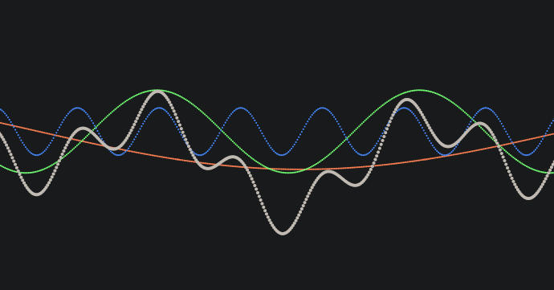
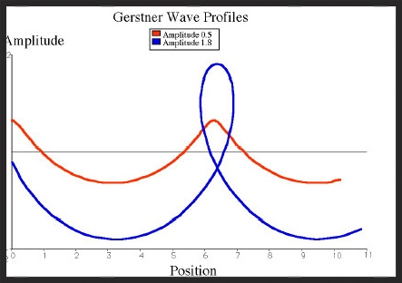
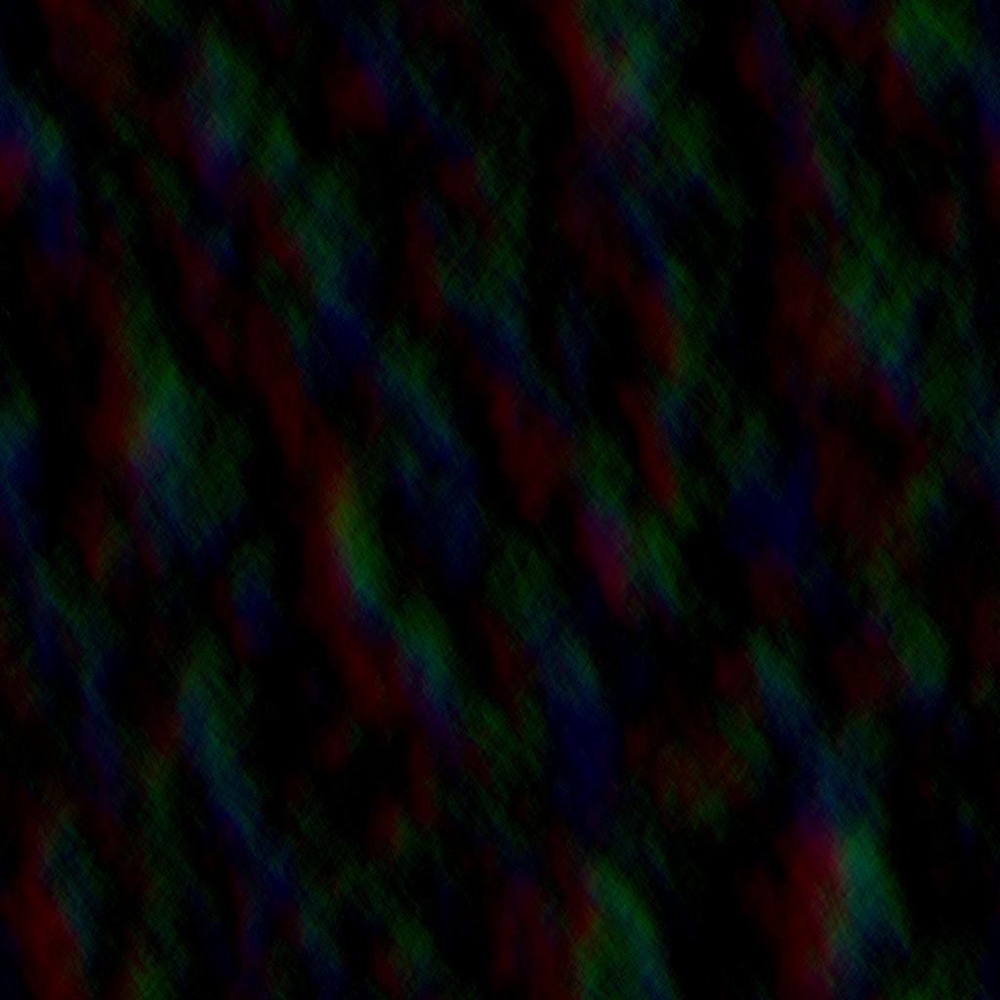

07.30.2026
first post
.....
This is my personal site filled with smaller projects and other things
Hi, I'm Jamie. This is my little corner of the web where I keep notes on things I'm building, records I'm listening to, and pages I don't want to lose track of.
I made this site by hand because I like knowing how every piece of it works. Most of what's here started as a weekend project that got a little out of hand.
When I'm not staring at a screen I'm usually taking something apart to see how it works, or trying to put it back together.
A physically accurate real-time ocean simulation using inverse fast Fourier transforms and compute shaders.
Procedural terrain generation using fractal Brownian motion and noise derivatives.
Simulating the ocean accurately can prove a fairly difficult task, especially when considering performance. Traditionally, we can model the ocean in real-time using methods like summing of sine waves.

or Gerstner waves.

Instead of these, you can model the surface as a dynamic wave field generated from a Fourier-domain spectrum. This means the water can be basically as close to physically accurate as possible and still perfrom quite well due to the fast Fourier transforms.
To do this, we can represent waves statistically through a spectrum. This spectrum shows how wave energy is distributed across different frequencies and directions, meaning it can be used for motion. Instead of simulating each wave independently, you can create a broad wave field from the spectrum and transform it into spatial displacement data. You can effectively gather all the data using FFTs and multiple compute shaders. An example of the displacement data in an arbitrary frame:

To create the wave spectrum you can use wind speed, fetch, direction, depth, and gravity. Specifically, the JONSWAP spectrum is used, which is a method of constructing waves. More Info on JONSWAP. Once the initial spectrum is created, it is evolved over time and passed through horizontal and vertical FFT stages. All these stages give us some heightmaps which are used to displace a mesh in the scene. The final stage assembles displacement and slope maps, which are used in the final render shaders.
A few techinal details should be mentioned that help this whole project work properly. The vast majority of the work is done on the GPU using compute shaders, allowing good enough performance for real time uses. There is also a lot of texture channel packing, like the example of the displacement texture.
tech: OpenGL, C++, GLSL
Terrain generation is a staple project and it quite useful since its used in so many scenarios. At this point using fractal brownian motion is commonplace. However, from this wonderful article by Inigo Quilez, we can read a bit about the noise derivatives.
The noise derivatives can be found using this piece of code
vec4 noised(in vec3 x) {
vec3 p = floor(x);
vec3 w = fract(x);
vec3 u = w * w * w * (w * (w * 6.0 - 15.0) + 10.0);
vec3 du = 30.0 * w * w * (w * (w - 2.0) + 1.0);
float a = myRandomMagic(p + vec3(0, 0, 0));
float b = myRandomMagic(p + vec3(1, 0, 0));
float c = myRandomMagic(p + vec3(0, 1, 0));
float d = myRandomMagic(p + vec3(1, 1, 0));
float e = myRandomMagic(p + vec3(0, 0, 1));
float f = myRandomMagic(p + vec3(1, 0, 1));
float g = myRandomMagic(p + vec3(0, 1, 1));
float h = myRandomMagic(p + vec3(1, 1, 1));
float k0 = a;
float k1 = b - a;
float k2 = c - a;
float k3 = e - a;
float k4 = a - b - c + d;
float k5 = a - c - e + g;
float k6 = a - b - e + f;
float k7 = -a + b + c - d + e - f - g + h;
return vec4(-1.0 + 2.0 * (k0 + k1 * u.x + k2 * u.y + k3 * u.z + k4 * u.x * u.y + k5 * u.y * u.z + k6 * u.z * u.x + k7 * u.x * u.y * u.z),
2.0 * du * vec3(k1 + k4 * u.y + k6 * u.z + k7 * u.y * u.z,
k2 + k5 * u.z + k4 * u.x + k7 * u.z * u.x,
k3 + k6 * u.x + k5 * u.y + k7 * u.x * u.y));
}
which will return the 3D value noise and its derivatives.
tech: OpenGL, C++, GLSL
Best way to reach me is email.